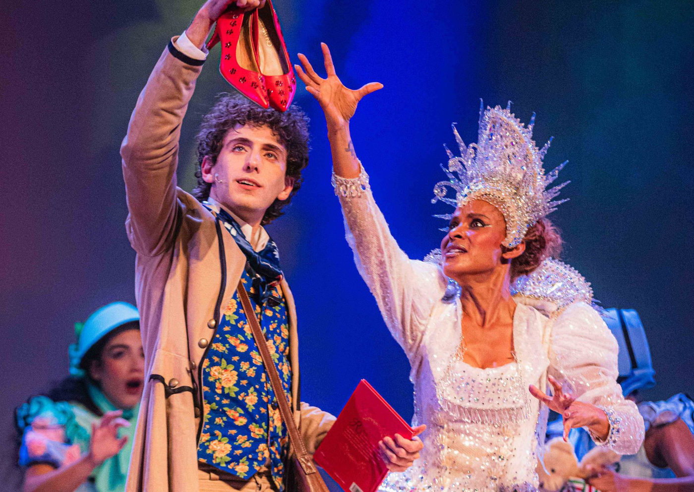

Musical “Sonho Encantado de Cordel” une Hans Christian Andersen e literatura de cordel no palco do Teatro João Caetano

Espetáculo com direção de Thereza Falcão, músicas originais de Paulinho Moska, Chico César e Zeca Baleiro, e cenografia de Rosa Magalhães faz temporada de 2 a 25 de maio no Centro do Rio
Depois de encantar plateias em várias capitais brasileiras, o musical Sonho Encantado de Cordel chega ao Teatro João Caetano, no Rio de Janeiro, com apresentações de 2 a 25 de maio, às sextas às 19h e sábados e domingos às 17h.
A superprodução, dirigida por Thereza Falcão, mistura contos de fadas de Hans Christian Andersen com o universo da literatura de cordel nordestina, inspirando-se no enredo "Uma Delirante Confusão Fabulística", criado por Rosa Magalhães para o carnaval da Imperatriz Leopoldinense em 2005.
Elenco, música e cenários grandiosos
Com um elenco formado por 14 artistas, cantores e multi-instrumentistas — incluindo Aline Wirley, Igor Rickli e Gab Lara — o espetáculo apresenta uma jornada mágica através dos sonhos de Rosa Cordelista, jovem que deseja se tornar cordelista e acaba encontrando, em um universo onírico, o próprio Hans Christian Andersen.
Ao lado do autor dinamarquês, Rosa embarca em uma jornada fabulosa, repleta de desafios e personagens míticos como a Rainha da Neve, imperadores vaidosos e reis sábios, aprendendo que a criatividade e os sonhos são as forças mais poderosas para transformar o mundo.
Encontro entre culturas e linguagens
A peça aposta na fusão entre elementos do folclore brasileiro e da tradição europeia dos contos de fada, com trilha sonora original assinada por Paulinho Moska, Chico César e Zeca Baleiro. A direção musical é de Marcelo Alonso Neves, as coreografias de Renato Vieira, e o espetáculo ainda conta com projeções visuais de Batman Zavareze e mais de 50 figurinos e 10 cenários concebidos por Rosa Magalhães e Mauro Leite.
“É uma experiência teatral única que celebra a diversidade e valoriza a identidade brasileira”, afirma Benjamin Sacksteder, presidente da CAIXA Vida e Previdência, patrocinadora do musical via Lei Federal de Incentivo à Cultura.
SERVIÇO
🎭 Sonho Encantado de Cordel, O Musical
📍 Teatro João Caetano – Praça Tiradentes, s/n – Centro, Rio de Janeiro – RJ
📅 Temporada: de 2 a 25 de maio
🕐 Horários: sextas às 19h, sábados e domingos às 17h
⏱ Duração: 70 minutos
👶 Classificação indicativa: Livre
🎟 Ingressos:
Plateia: R$ 70 (inteira) | R$ 35 (meia)
Balcão Nobre: R$ 50 (inteira) | R$ 25 (meia)
Balcão Simples: R$ 30 (inteira) | R$ 15 (meia)
Meia solidária: com doação de 1 kg de alimento ou livro infantil
🔗 Vendas online: funarj.eleventickets.com
📲 Instagram: @sonhoencantadodecordel